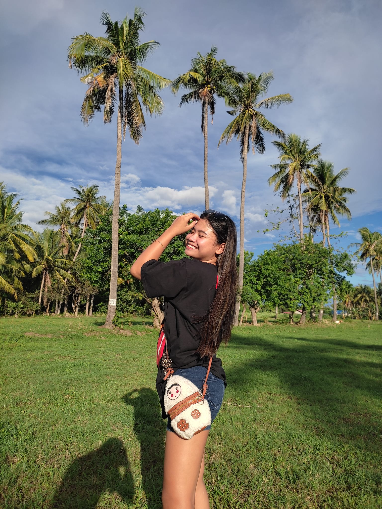

Hello! I'm Gabrielle Antoinette Bruce, but they call me Abby. I am 20 years old and I am a student of BSIT. The truth is
that I want to cook, it's my hobby, and I see here what interests me in life. I also like to spend time with my family
and friends because I know that I will be happy when I am with them.
I have a pretty much know about different languages, such as HTML/CSS, Python, C++ and Java. I was eager to learn new concepts and develop more dynamic projects with these new technologies.
I'm currently 3rd year college at Batangas State University formerly known as National Engineering University. I'm living at Lemery, Batangas.